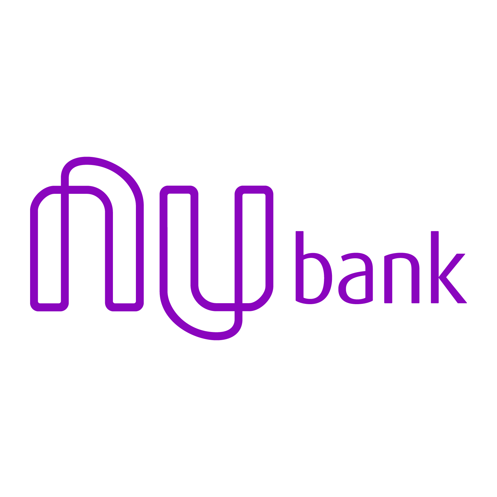

Venha participar da mudança da sua vida, este bolão vai mudar sua vida!!!
Participe da Mega da Virada 2023 - Suporte Siac Sistemas
Chave Pix: 028.823.651-36 / Nubank - Marcus Vinicius

Regras do Bolão:
1 – O valor da cota inicial será de 50,00 R$, mas poderá ter alterações mínimas para ser cumprida a 3°regra, a seguir.
2 – O bolão é feito entre amigos do suporte da Siac Sistemas, a entrada de outros participantes deverá ter a devida aprovação.
3 – Faremos com que todos os participantes tenham seu volante (Comprovante do Jogo).
3.1 – Para que todos possuam seu volante precisamos atender as regras da caixa econômica federal.
3.1.1 – De acordo com o site da Caixa, na Mega-Sena, os bolões têm preço mínimo de R$ 15,00. Porém, cada cota não pode ser inferior a R$ 6,00.
Essa é a mesma lógica para os bolões da Mega da Virada.
4 – Iremos arrecadar o valor inicial de 50,00R$ porem para atender a 3°regra, poderá haver um valor a ser partilhado entre os participantes,
devido não ser possível prever o valor arrecadado.
5 - Os participantes poderam realizar o pagamento até a data final 27/12/2023.
6 - A entrega do volantes será feita no dia 28/12/2023 na Siac Sistemas.